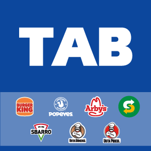

TAB GIDA OPERATES A NETWORK OF MORE THAN 1700 RESTAURANTS ACROSS TURKEY.

TAB GIDA FRANCHISE
As TAB Gıda, since 1995, we have been taking place with leading world brands in the fast service restaurant chain sector with our increasing experience every day. We are the Master Franchisee of the World-Famous international brands like Burger King®, Sbarro®, Popeyes® and Arby's® in Turkey with high brand awareness and quality standards.

TAB Gıda Is Leading The Digital Transformation Of The Food And Beverage Industry!
TAB Gıda leads the digitalization of the food and beverage industry with online applications such as Ne Yediğini Bil!, Tıkla Gelsin and Facebook Messenger BOT, which have been implemented in line with changing consumer behavior.
CONTINUES

GO
WORKING IN TAB GIDA
As TAB Gıda, within our corporate culture our aim is to give our employees a lifestyle, not just a job.
MEDYA